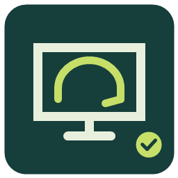

Open and get to work.
Explore the training desktop, start an incident, and use the simulated admin tools. Your progress stays in this browser.
- No VM or installation required
- Directory, PowerShell practice, and tickets
- Offline coaching included

CORPDeskTHE IT SUPPORT PRACTICE LABYOUR FIRST SHIFT STARTS HERE
A hands-on practice desktop for the everyday work of IT support. Help users, investigate the issue, and document a fix you can explain.
Browser-based simulation. No VM setup to get started.
Build a troubleshooting habit.
Scope the issue. Gather evidence. Verify the result.
Directory accounts · PowerShell · Network settings · Service desk · Evidence
THE OBJECTIVE
Reading a solution is one thing. Knowing what to check next takes practice.
CORP Desk gives you a small corporate environment to explore: fictional employees, department groups, a Windows-style endpoint, shared resources, and a ticket queue. The aim is to develop a support process you can repeat and explain.
Take a look around ↗A FEW THINGS ON YOUR QUEUE
Move between the directory, terminal, and ticket.
They share the same lab state.
Select a workflow to replay its animated preview. The lab includes five automated break-fix exercises and additional manually verified scenarios.
THE PROCESS IS PART OF THE PRACTICE
Build the discipline of a service desk technician: ask a useful question, test a hypothesis, make a focused change, and confirm the user can work again.
Start your first incident ↗One workstation. Internal names fail.
Inspect IP settings. Compare name resolution.
Retest the service and record the root cause.
PICK YOUR WORKSTATION
Start with the browser, or install the Windows app
for real web browsing and local Ollama discovery.
KNOW THE ENVIRONMENT
Directory, PowerShell, and endpoint workflows model common tasks. They do not configure your real Windows accounts or run arbitrary host commands.
Keep saved files, ticket notes, and exported evidence. Closing an app clears its working session while preserving saved lab records.
Use the offline coach immediately. For a local model, run Ollama and choose a downloaded model. The Windows app checks its availability for you.
There’s a ticket waiting.